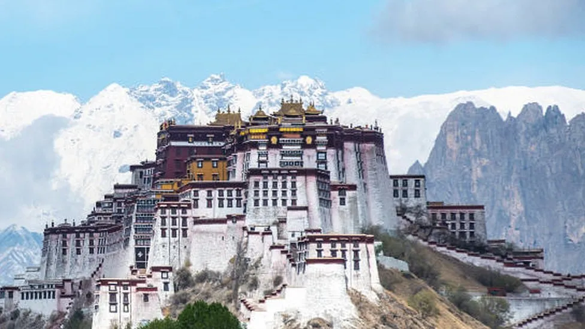
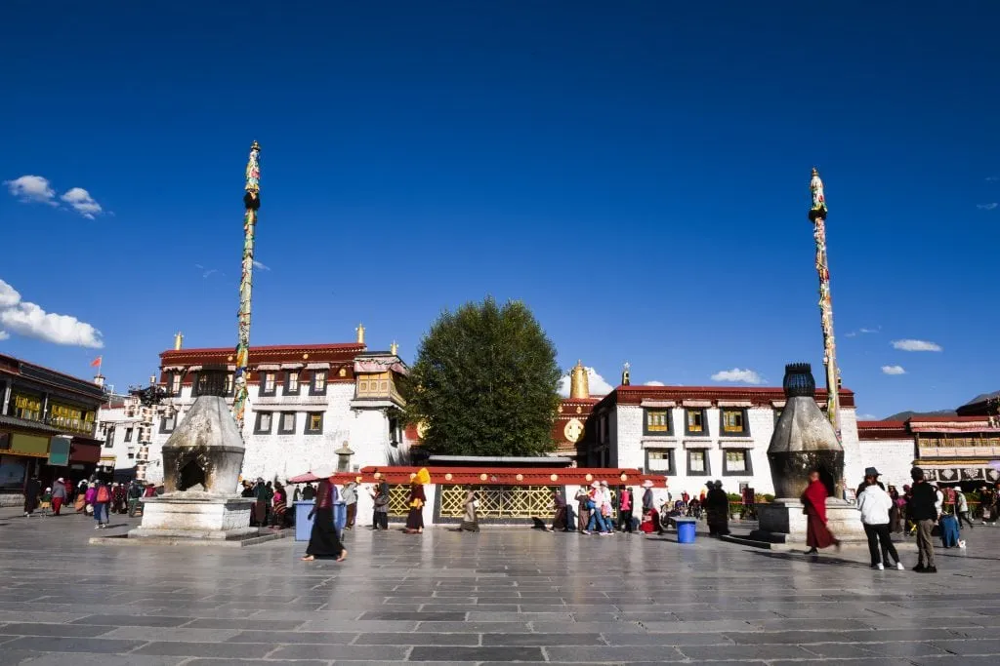
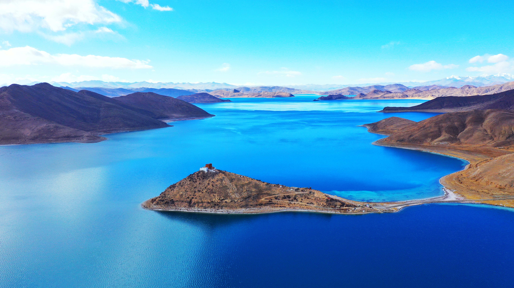
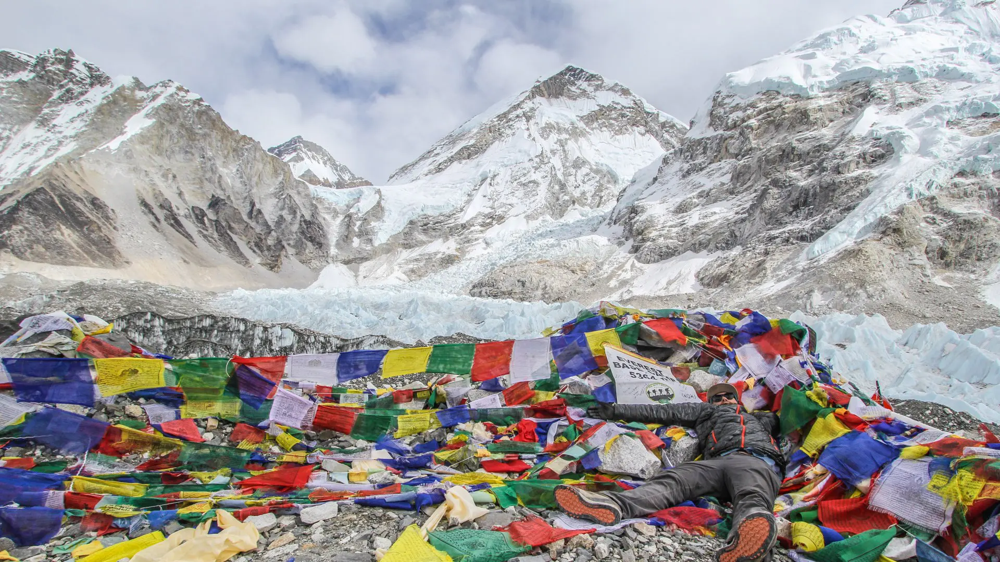

Arrival in Lhasa – The Spiritual Heart of Tibet
Stepping off the plane in Lhasa, I was immediately struck by the
thin, crisp air at this high altitude. Lhasa, the capital of
Tibet, is a city steeped in history and spirituality. My first
stop was the iconic Potala Palace, the former winter residence
of the Dalai Lama. As I climbed the steps of this magnificent
structure, I was overwhelmed by the sense of reverence that
permeates every corner. The view from the top, overlooking the
city and the distant mountains, was nothing short of
awe-inspiring.

Immersing in Tibetan Buddhism at Jokhang Temple
Next on my itinerary was the Jokhang Temple, the most sacred
temple in Tibet. As I entered, I joined the throngs of pilgrims
who come from all over the region to prostrate themselves and
offer prayers. The smell of burning incense, the sound of
chanting monks, and the sight of countless butter lamps
flickering in the dim light created an atmosphere of deep
devotion. This was a place where spirituality was not just a
practice but a way of life.

Journey to Yamdrok Lake – A Turquoise Gem Among the Mountains
A day trip from Lhasa took me to Yamdrok Lake, one of Tibet’s
three sacred lakes. The drive through winding mountain roads was
an adventure in itself, with panoramic views of the snow-capped
Himalayas. As we approached the lake, the sight of its vivid
turquoise waters against the backdrop of rugged mountains took
my breath away. I spent hours here, simply soaking in the
tranquility and the profound beauty of this place.

Trekking to the Everest Base Camp – Touching the Sky
No trip to Tibet would be complete without a visit to the
Everest Base Camp. The journey to the base camp is challenging
but immensely rewarding. The rugged terrain and high altitude
make every step a test of endurance, but the sight of Mount
Everest, standing tall and majestic, makes it all worthwhile.
Standing at the base camp, looking up at the highest peak in the
world, was an experience that left me speechless.

Savoring Tibetan Culture – Food, Art, and Local Lifey
Tibetan culture is as rich and diverse as its landscapes. I had
the opportunity to try traditional Tibetan cuisine, with dishes
like momo (dumplings) and tsampa (roasted barley flour) that are
both hearty and flavorful. I also explored local markets where
artisans sell handmade crafts, from intricate thangka paintings
to prayer beads. The warmth and hospitality of the Tibetan
people made this cultural immersion truly unforgettable.
07 July , 2020
80 people have share this